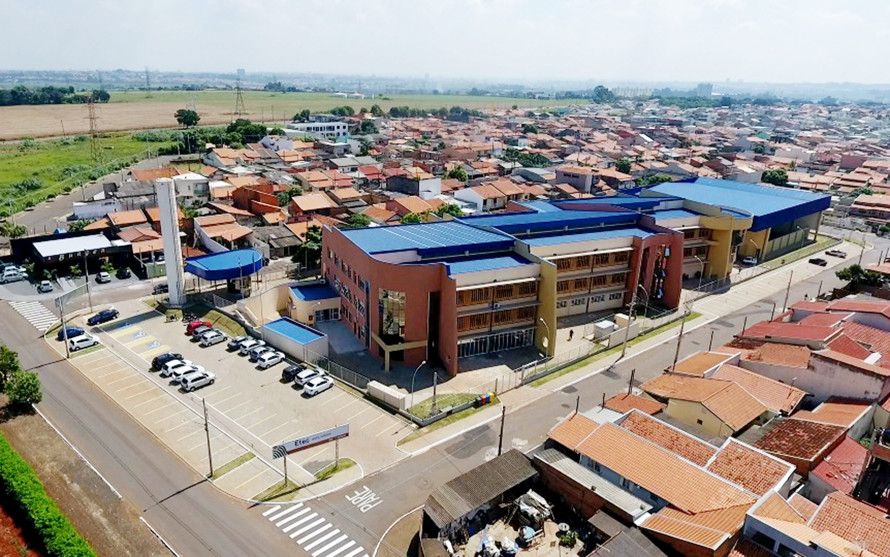
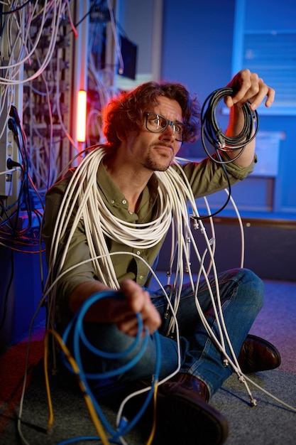

Engenheiro de
Redes
Um engenheiro de redes é responsável por projetar, implementar e manter redes de computadores, garantindo que funcionem de forma eficiente e segura.
História da Etec:

No 2º semestre de 2005, através de um convênio firmado entre o Centro Estadual de Educação Tecnológica “Paula Souza”, a FAT – Fundação de Apoio a Tecnologia e a Prefeitura Municipal de Nova Odessa, tem início às atividades da Classe Descentralizada da ETEC Polivalente de Americana na cidade de Nova Odessa.
Neste primeiro momento foram oferecidos 2 cursos técnicos:
Técnico em Informática;
Técnico em Segurança do Trabalho;
A então Classe Descentralizada passou a funcionar no prédio da EMEF “Dante Gazzetta”, uma Escola Municipal de Ensino Fundamental localizada no centro de Nova Odessa.
Em 2007 a extensão passou a oferecer os cursos técnicos em Administração e Segurança do Trabalho, deixando assim de oferecer o curso de Informática.
No dia 03 de março de 2010, através do decreto do Governo do Estado, foi criada a Escola Técnica Estadual de Nova Odessa, no município de Nova Odessa, como a unidade de ensino 234 do Centro Estadual de Educação Tecnológica “Paula Souza” – CEETEPS.
A unidade recém criada continuou funcionando provisoriamente na EMEF “Dante Gazzetta”, até que em junho de 2010, a Prefeitura Municipal, após alugar um prédio, localizado à rua Theófilo Sniker, nº 38, no Parque Industrial Harmonia, realiza as reformas necessárias para que a ETEC de Nova Odessa transferisse as suas atividades para o novo espaço.
Com um número maior de salas de aula e laboratórios, a unidade aumenta a oferta de vagas à população local e da região, sendo que no 2º semestre de 2010 é implantado também o curso Técnico em Modelagem do Vestuário.
Neste mesmo período a Etec de Nova Odessa, através do Plano de Expansão II do Governo do Estado, inicia novos cursos técnicos na E.E. Profª Silvânia Aparecida Santos, localizada no bairro Santa Luiza II em Nova Odessa. A extensão oferece à comunidade, no 2º semestre de 2010, o curso Técnico em Logística e a partir do 2º semestre de 2011 o curso Técnico em Contabilidade.
Neste mesmo período a Etec de Nova Odessa, através do Plano de Expansão II do Governo do Estado, inicia novos cursos técnicos na E.E. Profª Silvânia Aparecida Santos, localizada no bairro Santa Luiza II em Nova Odessa. A extensão oferece à comunidade, no 2º semestre de 2010, o curso Técnico em Logística e a partir do 2º semestre de 2011 o curso Técnico em Contabilidade.
Em 2012, novo Curso: Técnico em Informática Integrado ao Ensino Médio – ETIM, funcionando em período integral.
No ano de 2014, a Unidade oferece o Curso Técnico em Modelagem do Vestuário Integrado ao Ensino Médio e o Técnico em Transações Imobiliárias, sendo que esse último, na EE Silvania Aparecida Santos – Classe Descentralizada.
Em 2015, no 2.º Semestre, a Unidade Escolar amplia sua oferta de vagas, desta feita para o curso Técnico em Contabilidade na EE Silvania Aparecida Santos – Classe Descentralizada.
No primeiro semestre de 2017, a Etec inicia o Curso Técnico em Marketing Integrado ao Ensino Médio – ETIM.
Em outubro de 2017, ocorreu a mudança de prédio da da nova sede da Etec de Nova Odessa, agora localizada na Avenida São Gonçalo, 2770 – Jardim da Alvorada.
Em abril de 2018, deu-se a inauguração da nova sede da Etec de Nova Odessa..
No mês de outubro de 2018, os cursos de Técnico em Contabilidade, Técnico em Logística e Técnico em Transações Imobiliárias foram transferidos da Classe Descentralizada, para a nova Sede da Etec de Nova Odessa, encerrando-se assim o Convênio do Centro Paula Souza com a Secretaria Estadual de Educação na Unidade prof. Silvânia Aparecida Santos.
Em 28 de dezembro de 2018, a Etec de Nova Odessa conforme Diário Oficial do Estado de São Paulo passou a denominar-se: Etec Ferrúcio Humberto Gazzetta.
No ano de 2019, a Etec passa a oferecer dois novos cursos: Técnico em Desenvolvimento de Sistemas Integrado ao Ensino Médio e Técnico em Recursos Humanos, período noturno.
Em 2020, ano de pandemia do COVID 19, nossa unidade escolar contou com três cursos de ensino técnico integrado ao ensino médio em Administração, Desenvolvimento de Sistemas e Marketing e com cinco cursos técnicos modulares em Administração, Contabilidade, Logística, Recursos Humanos e Segurança do Trabalho.
A Etec Ferrúcio Humberto Gazzetta no início do ano de 2021, em continuidade aos 5 cursos técnicos modulares e 3 cursos técnicos integrados ao ensino médio, ofertou um curso de ensino médio técnico em parceria com a Secretaria da Educação do Estado de São Paulo. Ainda, no segundo semestre de 2021, iniciou-se a oferta do curso Técnico em Informática, período noturno.
Em 2022, a Etec passou a ofertar além dos cursos Técnicos Integrados ao Ensino Médio em Administração, Desenvolvimento de Sistemas e Marketing, os cursos de Ensino Médio com Itinerário Formativo de Linguagens, Ciências Humanas e Sociais no período da manhã e o curso de Ensino Médio com Habilitação Profissional em Recursos Humanos no período da tarde. No período noturno, deu-se a continuidade dos cursos de Administração, Informática, Recursos Humanos e Segurança do Trabalho.
Em 2023, a Etec passou a ofertar além dos cursos Ensino Médio com Habilitação Profissional em Administração, Desenvolvimento de Sistemas e Marketing, os cursos de Ensino Médio com Itinerário Formativo de Ciências Humanas e Sociais Aplicadas no período da manhã e o curso de Ensino Médio com Habilitação Profissional em Recursos Humanos no período da tarde. No período noturno, deu-se a continuidade dos cursos de Administração, Desenvolvimento de Sistemas, Qualidade, Recursos Humanos e Segurança do Trabalho.
Em 2024, a Etec deu continuidade na oferta dos cursos de Ensino Médio com Habilitação Profissional em Administração, Desenvolvimento de Sistemas e Marketing, os cursos de Ensino Médio com Itinerário Formativo de Ciências Humanas e Sociais Aplicadas no período da manhã e o curso de Ensino Médio com Habilitação Profissional em Recursos Humanos no período da tarde. No período noturno, deu-se a continuidade dos cursos de Técnicos Modulares em Administração, Desenvolvimento de Sistemas, Qualidade, Recursos Humanos e Segurança do Trabalho e Ensino Médio com Habilitação Profissional em Administração.
Sobre

Um engenheiro de redes de computadores é um profissional especializado na concepção, implementação, manutenção e otimização de redes de computadores. Seu principal objetivo é garantir que as redes funcionem de maneira eficiente, segura e confiável, atendendo às necessidades específicas da organização para a qual trabalham.
Esses engenheiros lidam com uma variedade de tarefas, desde a instalação física de equipamentos de rede, como cabos e roteadores, até a configuração de protocolos de comunicação e segurança. Eles são responsáveis por projetar a arquitetura de redes, considerando fatores como largura de banda, escalabilidade, redundância e segurança.
Média salarial:
R$ 6 mil - R$ 11 mil/mês
R$ 8 mil/mês Salário base médio
Formação de um Engenheiro de redes
Para se formar em Engenharia de Redes, é necessário seguir um curso superior que geralmente tem duração de 4 a 5 anos. Durante o curso, os alunos aprendem sobre arquitetura de redes, segurança cibernética, protocolos de comunicação e gerenciamento de redes corporativas. Os estudantes participam de atividades práticas em laboratórios e têm a oportunidade de estagiar em empresas do setor, ganhando experiência real antes de se formarem. A Engenharia de Redes faz parte do vasto universo das Engenharias Tech, uma área que impulsiona inovações na comunicação e segurança digital.
Certificações

Certificações técnicas são uma maneira de validar habilidades específicas em tecnologia da informação e redes de computadores. Certificações populares nesta área incluem CCNA (Cisco Certified Network Associate), CompTIA Network+, CCNP (Cisco Certified Network Professional), entre outras. Essas certificações podem ajudar a destacar-se no mercado de trabalho e aumentar as chances de empregabilidade.
Area de atuação
O engenheiro de redes de computadores é responsável por planejar, implementar, manter e otimizar redes dentro de uma organização. Ele começa realizando uma análise detalhada das necessidades da empresa, considerando fatores como largura de banda, quantidade de dispositivos, segurança e desempenho.
Com essas informações, projeta a arquitetura da rede, escolhendo a disposição dos equipamentos (roteadores, switches, servidores) e os protocolos de comunicação mais adequados. Após isso, cuida da instalação física, cabeamento estruturado e configuração dos dispositivos, garantindo que tudo funcione de forma integrada.
Depois da implementação, monitora continuamente o desempenho da rede usando ferramentas especializadas, identificando falhas, lentidão ou ameaças de segurança. Quando ocorrem problemas, ele diagnostica e aplica soluções técnicas, como reconfiguração de equipamentos ou substituição de peças.
Além do trabalho técnico, o engenheiro de redes precisa estar sempre atualizado com as inovações do setor, como redes definidas por software (SDN), computação em nuvem e virtualização, para manter a rede moderna, eficiente e segura.